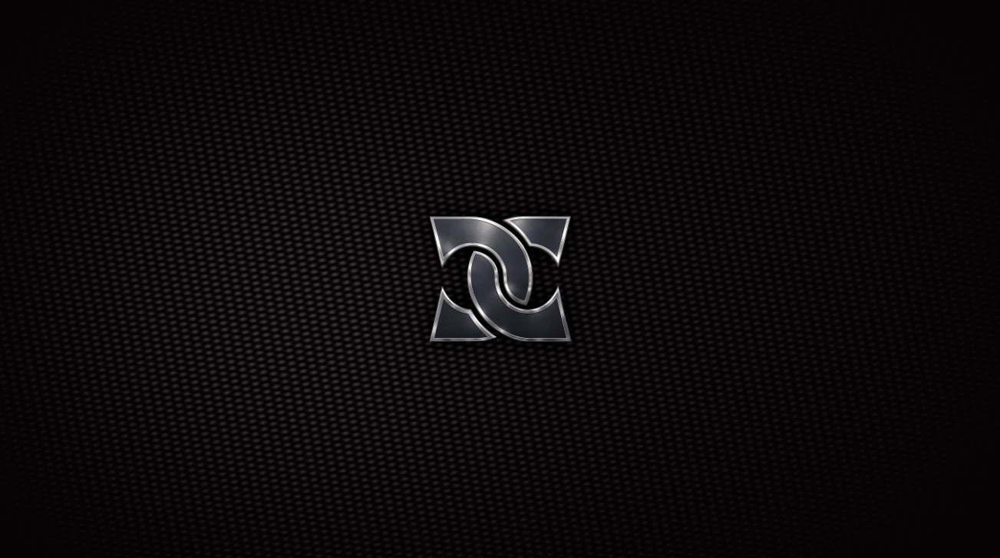

DanielClancy.live
Overview
DanielClancy.live is the long-form media channel covering leadership, platform strategy, and the operational realities of building modern media systems.
Distribution Platforms
- Owned web destinations for full-length video and transcripts.
- Live stream endpoints for real-time sessions and event coverage.
- Podcast feeds and audio archives for on-demand access.
Long-Form Strategy
The channel prioritizes durable, high-context content over short-cycle trends. Episodes are structured to remain relevant across planning horizons and to serve as reference material for teams and partners.
Future Expansion
Additional series formats, live programming, and partner collaborations will be cataloged as they launch.